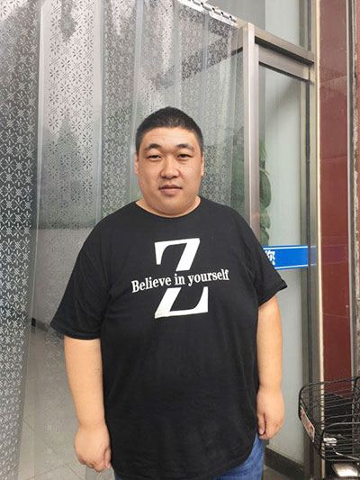
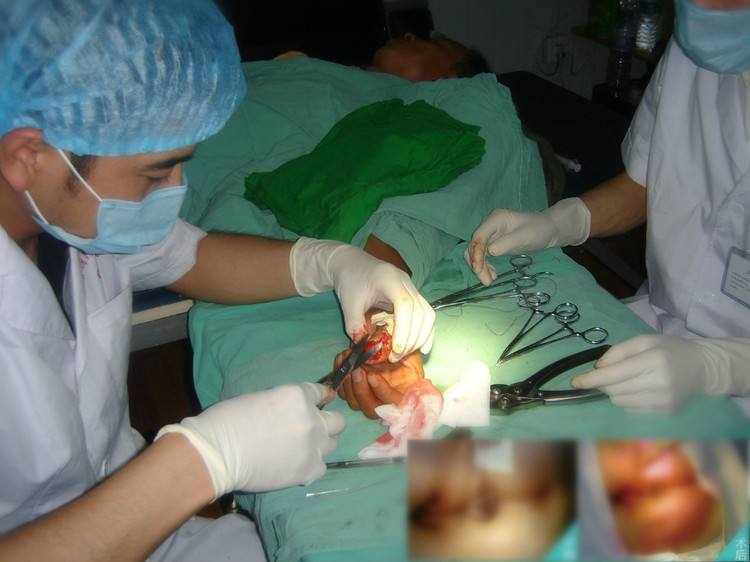
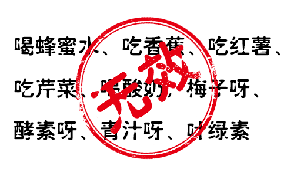
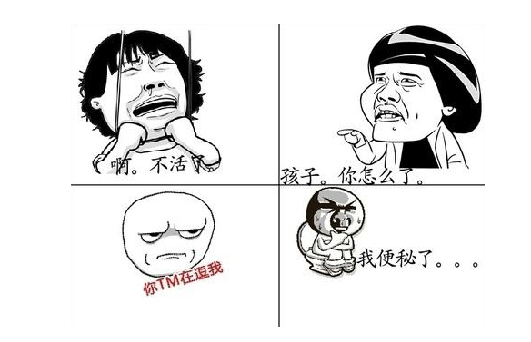
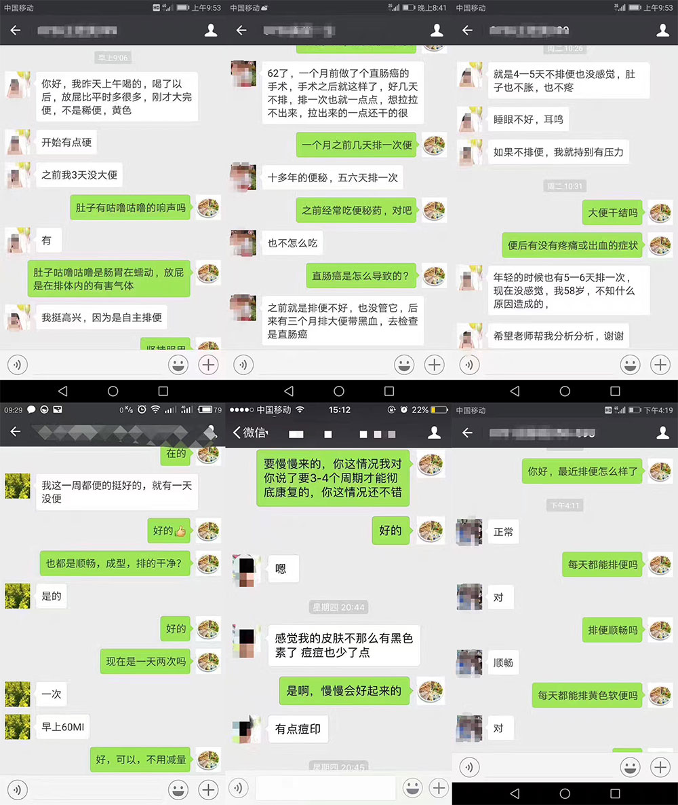
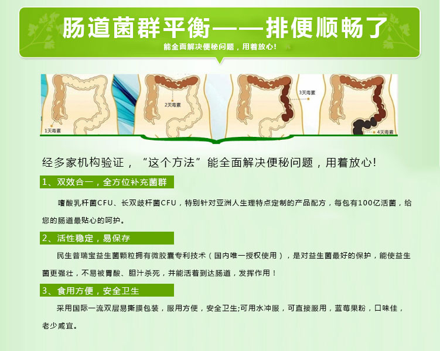
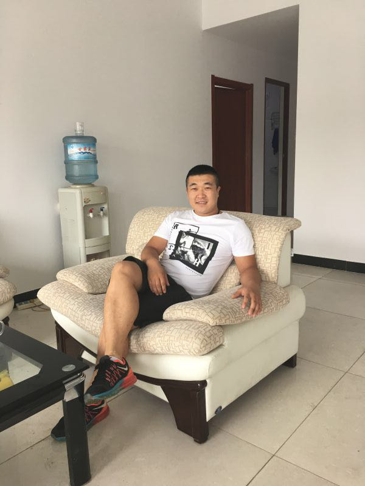
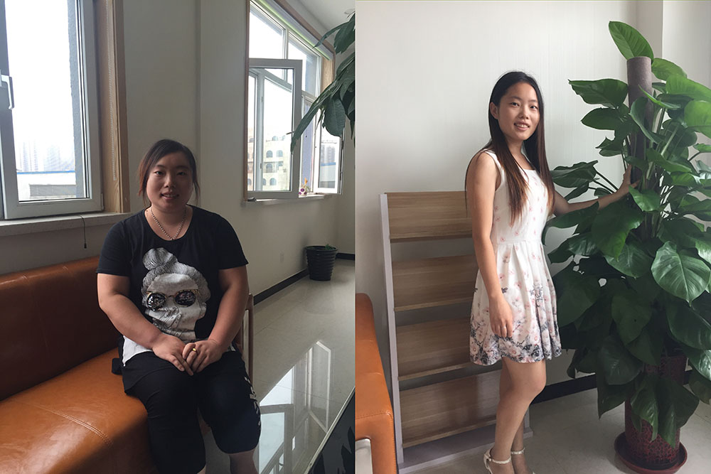
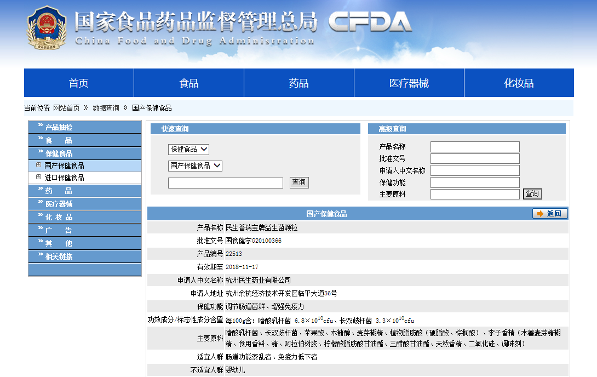
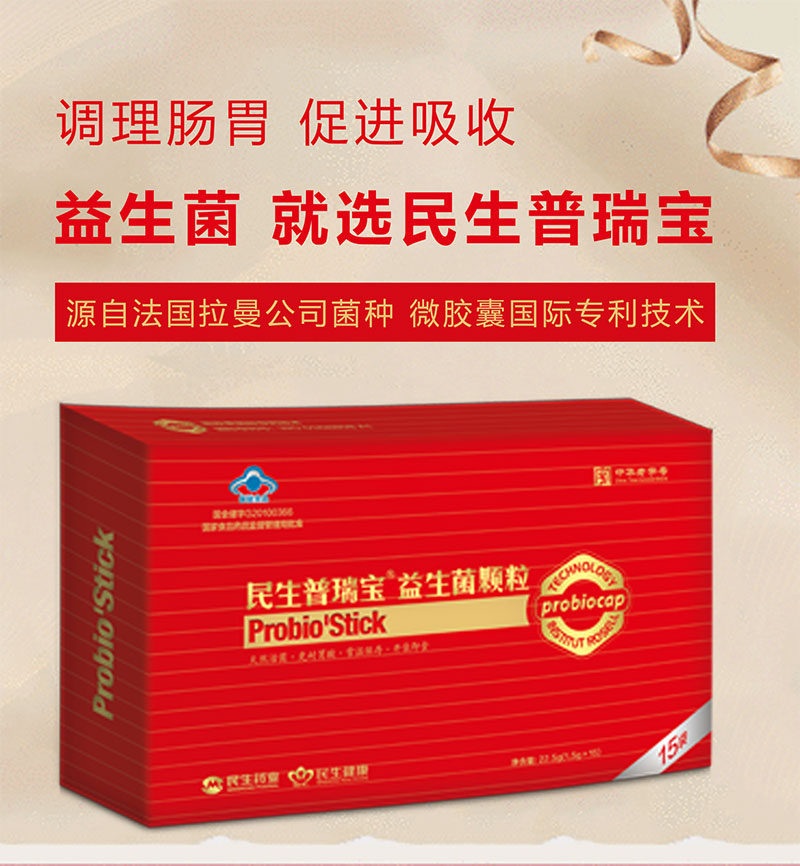

[真实经验分享]成年男子15年腹胀与便秘，只用一招，瞬间见效!
2002年8月3号之前，我的生活风平浪静，岁月静好。
8月4号开始，我那美丽的生活小帆船彻底被打翻了。
这是一段便秘邂逅益生菌的奇缘故事--来自一名15年便秘患者的自述……
我叫李民浩，今年35岁，便秘史足足超过15年了，被人戏称为貔貅，只进不出。
便秘的十几年里，大便又干又硬就跟羊屎蛋似的，家里的马桶经常被堵住；肚子不疼不难受，以前开塞露没少用，可给身体伤完了；睡眠不好，耳鸣，如果不排便，我就感觉特别有压力；一个大男人，脸上长了很多的黑色素，而且满脸冒痘痘，别人说我是“早更”了。
服用“活菌”前的我，体重180斤的大胖子

看着上面的我，面色萎黄，而且浑身臭气，口臭熏死人，下巴全是痘，痔疮严重，坐都不敢坐，便血每次都有，比大姨妈都多，我要疯了。
便秘越来越严重。虽然我会经常便秘，但是从来没有这么严重啊，现在简直严重到我根本走不了路了。
我走过的弯路，你是否正在经历？
一次我在场地吃午餐时，由于辣椒较多，没吃完一会，“后庭”就起了反应，我急忙跑进厕所，刚蹲下来，就有一股鲜血从肛门处喷涌而出，并且伴随着一个如葡萄大小的肉球脱出肛外，死死卡在门口，无法收回，这是怎么了?肛门如撕裂般疼痛的持续了一个多小时。最终我被同事紧急送往肛肠医院。
五雷轰顶——我被告知得了中度内痔！顺手被推上了手术床，腰杆上猛的就被来了一针麻醉。然后那个中年眼镜男提着钢刀两眼放光进来了，在我屁股上一会儿割一刀一会儿割一刀，问我疼不疼。在我下半身丧失知觉之前，他已经拿我试刀三次，疼得我够呛。眼镜男居然笑呵呵地说：“小伙子，第一次做这个手术，太紧张了，放松哈，放松了就不疼啦。做完手术的两小时后，突然一种用烙铁烙整个菊花的疼传来，一阵比一阵强烈，整个屁股好像放在碳火里面烤一样。第三个小时已经疼得我想放声痛哭，每次翻身都是撕心裂肺。

但是，重点是这一刀一刀的手术根本就没用，它只是割掉了肛门的肉球，根本解决不了我的内困啊，便秘还是肆意虐杀着我!
由于长期的便秘，我的体重从70公斤一下子到了90公斤，应酬过度的酒精侵蚀使得自己的肠胃胀气，难受。我真的快要绝望了，面对便秘，估计这辈子都要“毁”在便秘的手里。

没办法了，去医院洗肠。
洗一次给医生都臭快吐了。不过挺一段时间，然后就不行了，洗了几次医生说别来了，再来肠子都洗漏了。。。
我绝望了，每次只能自己用手抠，这么恶心和痛苦的生活过了五年，有一次我站在大马路中央，等着过来的车辆助我结束生命，却在闭上眼的那一刻，被一着橘色马褂，掌五尺扫帚的环卫大妈，一招四两拨千斤，掀翻在地，躲过了冲过来的大货车。

中病输掉一头牛，大病卖掉一栋楼; 辛辛苦苦几十年，一病回到解放前!
反反复复的手术、吃药不仅人遭罪还花钱!我这前前后后都花出去有快四万了，更严重的是这西药的副作用越来越厉害，西药的药毒本来就伤肝肾、肠胃，对于得了便秘的简直就更是雪上加霜!
加这个微信号:baoge5753(长按复制，去微信添加)，成功解决上述难点。
我本来以为这辈子是没救了，但万万没想到，我15年的便秘问题1个月就被解决了。
事情发生转机是在去年7月份。是我同一个小区的老邻居老赵，兴奋的跑到我家，向我介绍一种“活菌”。
了解过后我发现：这个治疗便秘的方法是用一种“活菌”来解决便秘问题的，对口臭口苦、大便不畅、大便干结、脸上长痘有非常好的效果，能够进行内调，改善腹胀、腹痛、食欲减退、嗳气反胃、大便带血等症状。
说真的我当时也没抱什么希望，因为失败太多次了，什么方法都试过! 但是，加一下总比不加的好，万一有点效果呢?
过了几天，我在大便的时候，又崩出了几滴血，一擦菊花，手纸上全是血，瞬间菊花让我疼到怀疑人生？
实在疼痛难忍，便秘折磨的我死去活来，我想起了微信里这个老师说的“活菌”，心想为什么不试一下呢？我开始每天都看这个“活菌”老师的朋友圈，偶尔也评论提些问题，老师回答的都特别认真仔细。她的朋友圈里面还有很多人发了摆脱便秘问题后的使用感受评价，说是用了感觉都挺好!
我把聊天记录截了图保存起来。别怪我小人之心，实在是这些年调理怕了!

最终我决定试试，毕竟产品正规又有老赵这位邻居的康复事实。
老师说，很多男性大肚腩，是因为发生便秘后肠道内蠕动能力减慢，粪便中的脂肪排泄不出去，容易形成脂肪堆积，男性在便秘之后还会导致前列腺出现问题，进而引起容貌、内在等变化，看起来非常显老、憔悴。
吞“活菌”有助于肠蠕动，当肠道内的酸度增加时，蠕动会更有力，接着会产生乳酸、醋酸及其他一些酸，刺激肠蠕动，改善便秘，完全没有任何的副作用。

现在我身边有十几个便秘问题的亲友都通过我介绍使用了这个方法，用后都觉得不错。
大家想更全面的了解这个方法，建议一定要加这个微信号:baoge5753长按复制，去微信添加
我用这个方法之后的切身体会是——不管什么便秘产品，说的再多，吹的再大，如果3天之内没有见效，那都是骗人的!
事实证明我多虑了!
收到货第一次用上，我就吃了一惊。小小便秘，用上就知道不一样：
1、服用当时：
当天喝了之后，到了晚上就特别想拉，去厕所之后，排出的是黑稀的便便，我当时怀疑是不是跟其他泻药类的差不多。
2、服用一周：
服用一周期的时候，粑粑也开始从黑臭到黄软了，而且不那么臭了，大便顺畅、成型、排的非常干净。
3、服用二周：
服用第二周期，排便量增多，一天两次，一次60ml，真的越来越舒服了。肠道蠕动加快，有咕噜咕噜的响声，排出次数趋于正常。
4、服用三周：
连续服了三周期，每天晚上都可以自然入睡，食欲也大增了，每天都会有便便，而且是金黄的细软的便便，面色、精神也大有好转，头脑清醒、思维敏捷，工作破天荒的得到老板的表扬，有一次在单位的称上称了一下，体重居然由原来的180降到了150斤。为了更好的调理肠道，我又加服了3个周期。
真是太神奇了。小小“活菌”治多病，全家都能用。之前我媳妇一直不支持我买，怕白花钱。看到这效果，她也服气了!
现在的我，体重150斤，很帅有木有

媳妇自从怀孕期间就开始出现便秘问题，现在闺女都5岁了，便秘问题依然困扰着她，皮肤长了密密麻麻的斑，体重从产后的148斤就没有掉过。整个人变的非常不自信，对我的猜忌、怀疑也越来越多，脾气也变得异常暴躁，经常跟我动不动就大吵大闹。看到我服用了“活菌”的蜕变之后，媳妇也跟着我一起服用，现在过去两个周期了，她的体重已经降到了110斤，皮肤变的光滑有弹性了，身材腰肢都纤细了很多，而且跟之前的那个暴躁的小怨妇判若两人，现在在我面前简直温柔的不要不要的，我还要告诉大家一个小秘密，自从服用“活菌”之后，我们的夫妻生活也越来越和谐了。

这个“活菌”，夫妻同服，效果翻倍哦！女性服用，减肥瘦身、养颜润肤，男性服用，清肠道、排宿便、瘦肚腩，夫妻生活更生猛。
大家想要了解，加这个微信号：baoge5753长按复制，去微信添加
这个方法治便秘到底有哪些独到之处?
事实上，这个方法已经有很多年的历史了，是一款真正经得起市场考验的通便方法。目前已帮助数十万的朋友摆脱了便秘问题。
它就是——
民生普瑞宝牌益生菌颗粒——源自法国拉曼公司，专业益生菌，安全性有保障!
民生药业始于1926年，中华老字号。2010年，与法国拉曼公司合作，微生态制剂“普瑞宝”保健产品上市，将打造称为民生继21金维他以后第二个大品牌产品。
最重要一点，批号，手续，一应俱全。益生菌原料源自法国拉曼公司——世界第三大酵母和细菌生产厂家，民生药业独家引进，并获得国际专利-微胶囊专利技术，抗胃酸存活率是普通益生菌的1000倍以上;民生普瑞宝益生菌颗粒是微胶囊国际专利技术拥有者，是国家食品药品监督管理局批准的国食健字G20100366，目前是中国益生菌领域生产销售领军品牌。

有些事，不是情到伤感处，你永远无法体味到那种刺心的痛，痛到连呼吸都感觉不到自己的存在感。
这个方法治便秘到底有哪些独到之处?
如果你也想拥有
像我一样的健康肠道
大家想要了解，加这个微信号：baoge5753长按复制，去微信添加
好的益生菌要看活性!菌数!还有菌种!
粒粒赛黄金的“活菌”国内也能买到了!民生普瑞宝益生菌颗粒是国内独家引进的源自法国拉曼公司的菌源，强势来袭，无疑是你最佳的选择!健康“活菌”——民生普瑞宝益生菌颗粒现正式火爆登场!1包民生普瑞宝益生菌颗粒抗胃酸存活率是普通益生菌的1000倍以上，对便秘缓解率为88%!
1、超高菌数：每颗简单的口服，米粒大小即可“种”进15亿以上庞大的活菌群。
2、微胶囊专利技术：菌种全球顶级，并采用独家保密的微胶囊专利技术，使每一粒菌群都穿上“防护衣”，抗胃酸，战胆汁，常温下是活的，进入肠道还是活的，兼顾乳酸菌活性稳定，保护菌种及营养提供，可使菌体长效定植于肠道中，帮助维持消化道健康。
3、民生普瑞宝益生菌颗粒通过三项活性实验：
A:耐胃酸活性实验：酸性PH2环境下180分钟后，存活率高达99%；
B:耐胆碱活性实验：胆碱0.3%环境下180分钟后，存活率高达99%；
C:耐常温存储活性实验：常温储存18个月后，存活率高达90%；
4、生产方式：菌株独立培养，菌数多，耗时成本高。

这事儿千真万确，你也可以加这个微信号:baoge5753
大家马上加上，别手懒，犹豫不决是没用的!
如果你也遇到便秘、肛裂、痔疮、拉不出来的情况，真的建议的大家去用这个“活菌”，我深知真正能帮助我们调理的方法真是太少了，搞不好还会让问题越来越重。
另外这个方法也不贵，只要一套衣服钱，价格不贵见效快，还省下大把费用。相信咱有顽固便秘问题的朋友，谁在解决这个问题时都得花个三万五万的，这一千多跟咱以往打水漂的钱比起来，真不算啥。小小“活菌”能买后半辈子的好身体，值得！
民生普瑞宝益生菌颗粒
不管是自用还是送父母，绝对是最好的选择
在此，祝天下所有便秘的朋友们都能早日走上菊花好、生活好的康庄大道!